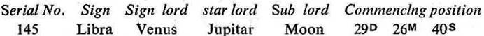
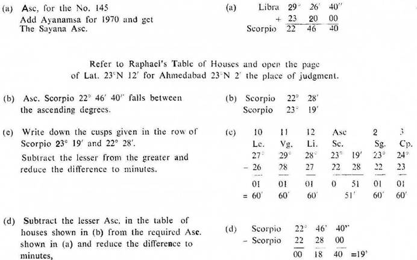
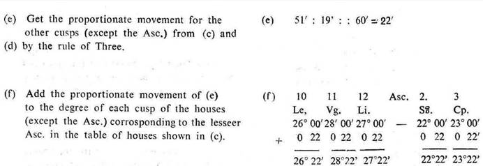
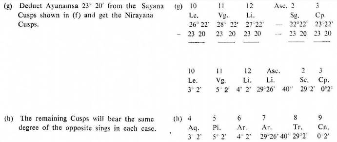

Suppose you want to find out the position of the cusps of the houses for the number 145 out of 249 for the year 1970.
Now look to the Table C for Subs in the chapter ‘2. Sub in Nakshatra System’ on page 8. Note the particulars about the No. 145 as under:

Take 29° 26' 40" Libra as the Asc, according to the Nirayana System,
We have to calculate the other 11 cusps for the latitude of the place from where we judge the query, from Raphael’s Table of Houses which is according to the Sayana system. So proceed as under:


There are the Sayana cusps for the number.
Prepare cusps of 12 houses for every number between 1 and 249 in this manner. These cusps will be the Sayana cusps for the houses 10, 11, 12, 2 and 3. So far as the Asc. is concerned keep the commencing position of the Sub according to the Nirayana System as it is e. g. for the number 145 keep Libra 29° 26' 40" as it is,
The Sayana cusps (for the houses 10, 11, 12, 2 and 3) for all 249 numbers will remain constant for any year. For getting the Nirayana cusps you have only to deduct the Ayanamsa for the required year. So It is desirable to keep a ready reckoner for the place of your permanent stay. This will save much of your time.

These are the Nirayana Cusps of 12 houses for the number 145. Thus a horary map of the Cusps is ready.
You have only to work out the position of the planets for the time of judging the query and to insert them in the map. Then the horary map is ready for judgment.